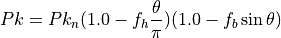
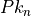
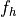

missile_wez_parameters¶
Overview¶
The missile_wez_parameters block provides a way for the user to circumvent the need for a more complex launch computer. If a launch computer is defined on the processor’s owning platform, the missile_wez_parameters commands have no effect.
The missile_wez_parameters block specifies the parameters used in WEZ calculations for the Air Combat WEZ Lines in the Air Combat Visualization Plugin. These parameters are also used when invoking WEZ script methods such as ExpectedWezRangeAgainstTarget and ExpectedWezRangeByTarget
Required subcommands within the missile_wez_parameters block are explained in Required Commands. Any other commands specified by the user are optional and simply override default values. These commands are explained in Optional Commands
- missile_wez_parameters … end_missile_wez_parameters¶
missile_wez_parameters // Required Commands side ... type ... // Optional Commands avg_speed ... max_time_of_flight ... max_off_boresight_angle ... min_time_of_flight ... nominal_pk ... head_on_pk_reduction ... broadside_pk_reduction ... end_missile_wez_parameters
Required Commands¶
- side [red ; blue]¶
Specifies the side for which the WEZ parameters apply. The available options are ‘red’ and ‘blue’.
- type [mrm ; srm]¶
Specifies the missile type for which the WEZ parameters apply. The available options are ‘mrm’ (medium-range missile) and ‘srm’ (short-range missile).
The combination of the side and type commands determines the default WEZ parameters. These can be overwritten with the Optional Commands.
For example:
# A medium-range missile of side blue will have the default WEZ parameters, except for the average speed. missile_wez_parameters side blue type mrm avg_speed 600 m/s end_missile_wez_parameters
Optional Commands¶
Any additional parameters that are explicitly set will override the respective parameters from the predefined set.
Missile WEZ parameters¶
- avg_speed <speed-value>¶
The average missile speed that will be used in the WEZ calculations.
Default: 550 m/s
- max_time_of_flight <time-value>¶
The missile’s maximum time of flight that will be used in the WEZ calculations.
Defaults: dependent on side and type. See the table below. See also Missile WEZ Defaults.
blue
red
mrm
120 seconds
100 seconds
srm
20 seconds
18 seconds
- max_off_boresight_angle <angle-value>¶
The maximum angle off the nose from the launching aircraft to the target.
Defaults: dependent on side and type. See the table below. See also Missile WEZ Defaults.
blue
red
mrm
80 degrees
100 degrees
srm
120 degrees
132 degrees
- min_time_of_flight <time-value>¶
The missile’s minimum time of flight that will be used in the WEZ calculations.
Defaults: dependent on side and type. See the table below. See also Missile WEZ Defaults.
blue
red
mrm
3.5 seconds
4.5 seconds
srm
1.5 seconds
1.5 seconds
Probability-of-Kill Parameters¶
A combination of nominal_pk, head_on_pk_reduction, and broadside_pk_reduction determines the overall probability of kill. See the equation below:
(1)¶
where:
is the overall probability of kill,
 is defined by nominal_pk
 is defined by head_on_pk_reduction
is defined by broadside_pk_reduction
is the angle off boresight
- nominal_pk <real>¶
The nominal probability of kill used in equation (1) above.
Defaults: dependent on side and type. See the table below. See also Missile WEZ Defaults.
blue
red
mrm
0.80
0.75
srm
0.95
0.90
Missile WEZ Defaults¶
The default WEZ parameters for each combination of side and type are shown in tables below. If only side and type are specified, all default values will be used. Any other command that is explicitly specified will override the default value for that particular side/type.
Blue Medium Range Missiles¶
Parameter Name |
Default Value |
|---|---|
550 m/s |
|
120 seconds |
|
80 degrees |
|
3.5 seconds |
|
0.80 |
|
0.0 |
|
0.2 |
Blue Short Range Missiles¶
Parameter Name |
Default Value |
|---|---|
550 m/s |
|
20 seconds |
|
120 degrees |
|
1.5 seconds |
|
0.95 |
|
0.0 |
|
0.2 |
Red Medium Range Missiles¶
Parameter Name |
Default Value |
|---|---|
550 m/s |
|
100 seconds |
|
100 degrees |
|
4.5 seconds |
|
0.75 |
|
0.3 |
|
0.3 |
Red Short Range Missiles¶
Parameter Name |
Default Value |
|---|---|
550 m/s |
|
18 seconds |
|
132 degrees |
|
1.5 seconds |
|
0.90 |
|
0.3 |
|
0.2 |